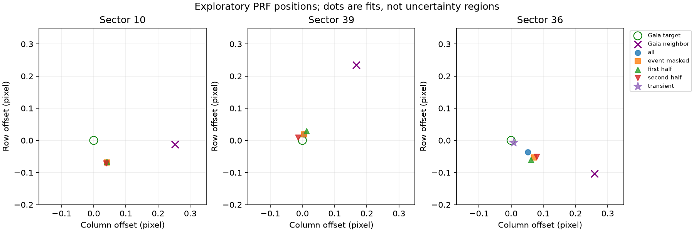
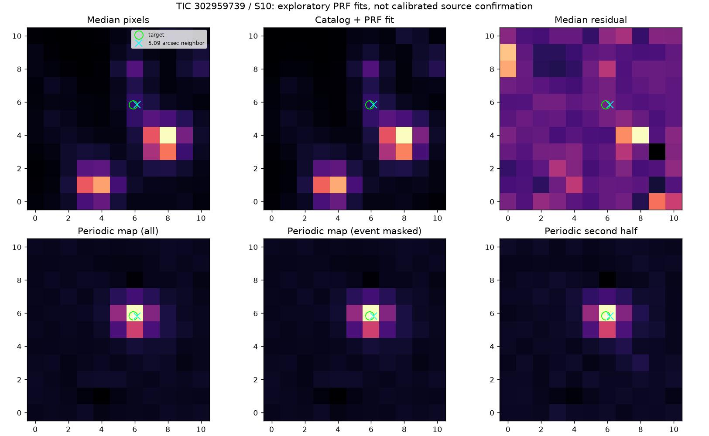
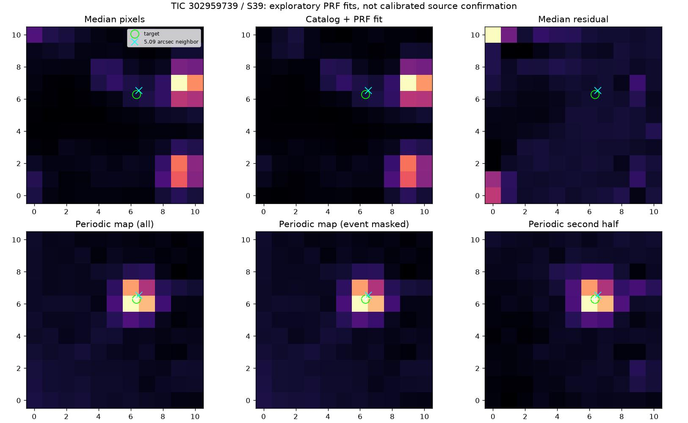
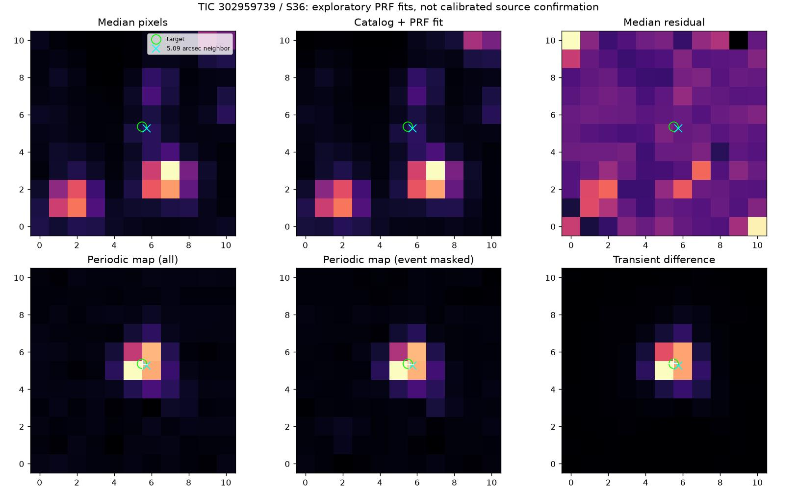
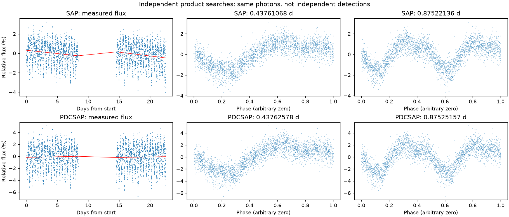
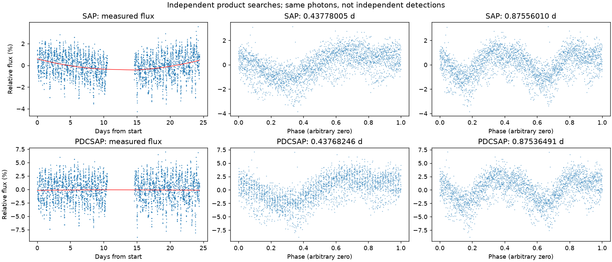
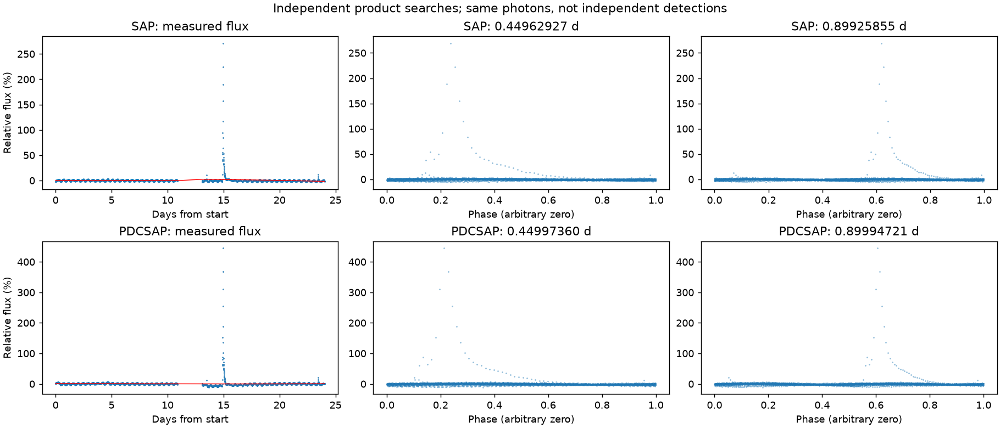
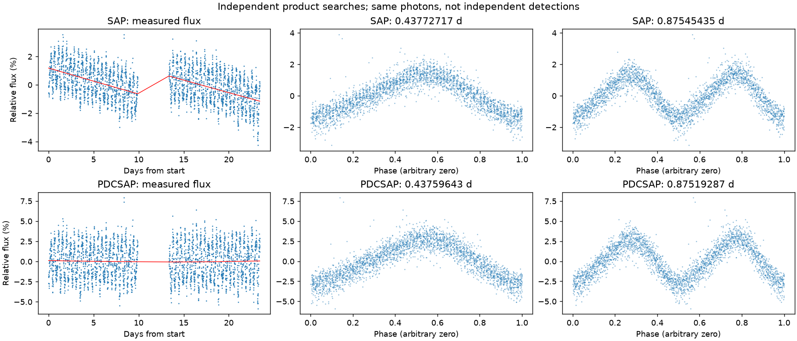
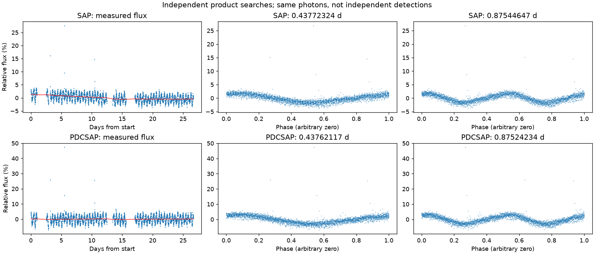

2026-11-22。当前保留为优先核验候选，未确认来源或首次发现资格，也未投稿。
| 观测区 | SAP | PDCSAP |
|---|---|---|
| S10（复用） | 0.43773601 天；preferred_lightcurve_cycle | 0.43773601 天；preferred_lightcurve_cycle |
| S11（新增） | 0.43761068 天；preferred_lightcurve_cycle | 0.43762578 天；preferred_lightcurve_cycle |
| S12（新增） | 0.43778005 天；competing_aliases | 0.43768246 天；competing_aliases |
| S36（新增） | 未检出；not_established | 未检出；not_established |
| S37（新增） | 0.43772717 天；preferred_lightcurve_cycle | 0.43759643 天；preferred_lightcurve_cycle |
| S38（新增） | 0.43772324 天；preferred_lightcurve_cycle | 0.43762117 天；preferred_lightcurve_cycle |
| S39（复用） | 6.56741300 天；preferred_lightcurve_cycle | 0.43761719 天；preferred_lightcurve_cycle |
S12 检出但保留竞争周期；S39 的 SAP 选了 6.5674 天，PDCSAP 选了约 0.4376 天。没有隐藏产品分歧。
约 0.2188 天半周期在全部 7 段 PDCSAP 中不合格；约 0.8754 天倍周期在同样 6 段中合格。倍周期能容纳两个相似周期，不能因此确定物理自转或轨道周期。当前也没有跨年相位连接或正式周期误差。
按 PDCSAP 距中值超过 8 × 1.4826 × MAD 屏蔽 114／15,679 个有效采样点，两产品共用这个掩码，通量值不改。SAP 和 PDCSAP 都恢复约 0.437909 天；单段恢复不等于原始全时段裁定通过。剩余突增尾部和趋势仍可见。
增亮最高有效采样发生在 BTJD 2296.910554（BJD_TDB − 2457000），相对各自整段中值的 SAP／PDCSAP 通量分别增加约 291%／478%。这是不同产品的相对通量，受混光和校正影响，不是去混光后的本征耀发幅度。

使用 Gaia 自行传播位置、官方 TESS 像素响应模型及全场非负光度拟合校准坐标。3 段完整周期图距目标约 0.0795、0.0194、0.0632 像素，距近邻约 0.2196、0.2703、0.2178 像素。S36 短时增亮距目标约 0.0101 像素、距近邻约 0.2691 像素。不同校准设置、去除突增以及前后半段均更靠近目标。
这些数字是模型拟合偏移，不是定位误差或置信区间。中位场图有结构性残差，模型失配、颜色、场外源和缺失自行均可带来系统偏移；混合变光源也未被完整建模。仅改变场图权重的 4 个设置不能覆盖全部系统误差。当前支持目标附近来源，尚不能彻底排除近邻；S36 固定参考周期图也不算独立检出。



5 项数值测试通过；同一官方 PRF 的目标／近邻注入共 6 项恢复检查通过。这只验证代码，不能校准实天误差。5 段新增光变重算与保存数字一致，3 段来源图重算一致。7,041 个基线文件校验通过，科学检测源码保持原指纹。
复算核验 · 完整摘要 · 半／倍周期比较 · 原始数据回执 · 读取新光变前的方案 · PRF 适配器 MIT 许可
下一步：用独立实天来源或可分辨的测光校准近邻排除能力，继续核查年轻星、自转及耀发研究中的先前报告，再确定物理分类、周期误差和历元。本轮没有新增目录查重结论；11 月 20 日的查询覆盖边界仍有效。




